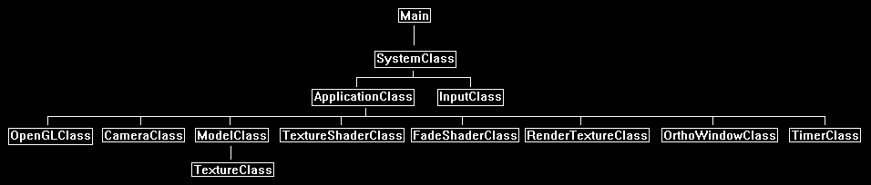

In this tutorial we will go over how to create the effect of fading in a scene.
The code in this tutorial is based on the previous tutorials and uses OpenGL 4.0 with GLSL and C++.
To add a level of polish to our application one of the nice effects to do is to add quick fades when transitioning between scenes.
The traditional approach of instantly displaying a loading screen and then abruptly rendering the next scene leaves something to be desired.
One of the easiest ways to do a scene fade is to use render to texture and just increase or decrease the pixel color over a short period of time.
This can also be expanded to do different types of scene transitions such as rendering two scenes and sliding between them, or different types of dissolves.
In this tutorial I will just do a fade in using render to texture and a fade shader.
Framework
The framework has a new FadeShaderClass for handling the shading of the fade in.
We also use the OrthoWindowClass and RenderTextureClass.
The TimerClass is also used in this tutorial to time the fade in.

Fade.vs
The fade GLSL shaders are just modified versions of the texture shaders.
////////////////////////////////////////////////////////////////////////////////
// Filename: fade.vs
////////////////////////////////////////////////////////////////////////////////
#version 400
/////////////////////
// INPUT VARIABLES //
/////////////////////
in vec3 inputPosition;
in vec2 inputTexCoord;
in vec3 inputNormal;
//////////////////////
// OUTPUT VARIABLES //
//////////////////////
out vec2 texCoord;
///////////////////////
// UNIFORM VARIABLES //
///////////////////////
uniform mat4 worldMatrix;
uniform mat4 viewMatrix;
uniform mat4 projectionMatrix;
////////////////////////////////////////////////////////////////////////////////
// Vertex Shader
////////////////////////////////////////////////////////////////////////////////
void main(void)
{
// Calculate the position of the vertex against the world, view, and projection matrices.
gl_Position = vec4(inputPosition, 1.0f) * worldMatrix;
gl_Position = gl_Position * viewMatrix;
gl_Position = gl_Position * projectionMatrix;
// Store the texture coordinates for the pixel shader.
texCoord = inputTexCoord;
}
Fade.ps
////////////////////////////////////////////////////////////////////////////////
// Filename: fade.ps
////////////////////////////////////////////////////////////////////////////////
#version 400
/////////////////////
// INPUT VARIABLES //
/////////////////////
in vec2 texCoord;
//////////////////////
// OUTPUT VARIABLES //
//////////////////////
out vec4 outputColor;
///////////////////////
// UNIFORM VARIABLES //
///////////////////////
uniform sampler2D shaderTexture;
We add a new input uniform variable called fadeAmount to control the color level of the texture.
This value will be incremented each frame to make the image brighter and brighter creating the fade in effect.
The value range is between 0.0 (0%) and 1.0 (100%).
uniform float fadeAmount;
////////////////////////////////////////////////////////////////////////////////
// Pixel Shader
////////////////////////////////////////////////////////////////////////////////
void main(void)
{
vec4 color;
// Sample the pixel color from the texture using the sampler at this texture coordinate location.
color = texture(shaderTexture, texCoord);
Here is where we use the fadeAmount to control the output color of all pixels from the texture to be set to a certain brightness.
// Reduce the color brightness to the current fade percentage.
color = color * fadeAmount;
outputColor = color;
}
Fadeshaderclass.h
The FadeShaderClass is just the TextureShaderClass modified to accommodate texture fading.
////////////////////////////////////////////////////////////////////////////////
// Filename: fadeshaderclass.h
////////////////////////////////////////////////////////////////////////////////
#ifndef _FADESHADERCLASS_H_
#define _FADESHADERCLASS_H_
//////////////
// INCLUDES //
//////////////
#include <iostream>
using namespace std;
///////////////////////
// MY CLASS INCLUDES //
///////////////////////
#include "openglclass.h"
////////////////////////////////////////////////////////////////////////////////
// Class name: FadeShaderClass
////////////////////////////////////////////////////////////////////////////////
class FadeShaderClass
{
public:
FadeShaderClass();
FadeShaderClass(const FadeShaderClass&);
~FadeShaderClass();
bool Initialize(OpenGLClass*);
void Shutdown();
bool SetShaderParameters(float*, float*, float*, float);
private:
bool InitializeShader(char*, char*);
void ShutdownShader();
char* LoadShaderSourceFile(char*);
void OutputShaderErrorMessage(unsigned int, char*);
void OutputLinkerErrorMessage(unsigned int);
private:
OpenGLClass* m_OpenGLPtr;
unsigned int m_vertexShader;
unsigned int m_fragmentShader;
unsigned int m_shaderProgram;
};
#endif
Fadeshaderclass.cpp
////////////////////////////////////////////////////////////////////////////////
// Filename: fadeshaderclass.cpp
////////////////////////////////////////////////////////////////////////////////
#include "fadeshaderclass.h"
FadeShaderClass::FadeShaderClass()
{
m_OpenGLPtr = 0;
}
FadeShaderClass::FadeShaderClass(const FadeShaderClass& other)
{
}
FadeShaderClass::~FadeShaderClass()
{
}
bool FadeShaderClass::Initialize(OpenGLClass* OpenGL)
{
char vsFilename[128];
char psFilename[128];
bool result;
// Store the pointer to the OpenGL object.
m_OpenGLPtr = OpenGL;
We load the fade.vs and fade.ps GLSL shader files here.
// Set the location and names of the shader files.
strcpy(vsFilename, "../Engine/fade.vs");
strcpy(psFilename, "../Engine/fade.ps");
// Initialize the vertex and pixel shaders.
result = InitializeShader(vsFilename, psFilename);
if(!result)
{
return false;
}
return true;
}
void FadeShaderClass::Shutdown()
{
// Shutdown the shader.
ShutdownShader();
// Release the pointer to the OpenGL object.
m_OpenGLPtr = 0;
return;
}
bool FadeShaderClass::InitializeShader(char* vsFilename, char* fsFilename)
{
const char* vertexShaderBuffer;
const char* fragmentShaderBuffer;
int status;
// Load the vertex shader source file into a text buffer.
vertexShaderBuffer = LoadShaderSourceFile(vsFilename);
if(!vertexShaderBuffer)
{
return false;
}
// Load the fragment shader source file into a text buffer.
fragmentShaderBuffer = LoadShaderSourceFile(fsFilename);
if(!fragmentShaderBuffer)
{
return false;
}
// Create a vertex and fragment shader object.
m_vertexShader = m_OpenGLPtr->glCreateShader(GL_VERTEX_SHADER);
m_fragmentShader = m_OpenGLPtr->glCreateShader(GL_FRAGMENT_SHADER);
// Copy the shader source code strings into the vertex and fragment shader objects.
m_OpenGLPtr->glShaderSource(m_vertexShader, 1, &vertexShaderBuffer, NULL);
m_OpenGLPtr->glShaderSource(m_fragmentShader, 1, &fragmentShaderBuffer, NULL);
// Release the vertex and fragment shader buffers.
delete [] vertexShaderBuffer;
vertexShaderBuffer = 0;
delete [] fragmentShaderBuffer;
fragmentShaderBuffer = 0;
// Compile the shaders.
m_OpenGLPtr->glCompileShader(m_vertexShader);
m_OpenGLPtr->glCompileShader(m_fragmentShader);
// Check to see if the vertex shader compiled successfully.
m_OpenGLPtr->glGetShaderiv(m_vertexShader, GL_COMPILE_STATUS, &status);
if(status != 1)
{
// If it did not compile then write the syntax error message out to a text file for review.
OutputShaderErrorMessage(m_vertexShader, vsFilename);
return false;
}
// Check to see if the fragment shader compiled successfully.
m_OpenGLPtr->glGetShaderiv(m_fragmentShader, GL_COMPILE_STATUS, &status);
if(status != 1)
{
// If it did not compile then write the syntax error message out to a text file for review.
OutputShaderErrorMessage(m_fragmentShader, fsFilename);
return false;
}
// Create a shader program object.
m_shaderProgram = m_OpenGLPtr->glCreateProgram();
// Attach the vertex and fragment shader to the program object.
m_OpenGLPtr->glAttachShader(m_shaderProgram, m_vertexShader);
m_OpenGLPtr->glAttachShader(m_shaderProgram, m_fragmentShader);
// Bind the shader input variables.
m_OpenGLPtr->glBindAttribLocation(m_shaderProgram, 0, "inputPosition");
m_OpenGLPtr->glBindAttribLocation(m_shaderProgram, 1, "inputTexCoord");
m_OpenGLPtr->glBindAttribLocation(m_shaderProgram, 2, "inputNormal");
// Link the shader program.
m_OpenGLPtr->glLinkProgram(m_shaderProgram);
// Check the status of the link.
m_OpenGLPtr->glGetProgramiv(m_shaderProgram, GL_LINK_STATUS, &status);
if(status != 1)
{
// If it did not link then write the syntax error message out to a text file for review.
OutputLinkerErrorMessage(m_shaderProgram);
return false;
}
return true;
}
void FadeShaderClass::ShutdownShader()
{
// Detach the vertex and fragment shaders from the program.
m_OpenGLPtr->glDetachShader(m_shaderProgram, m_vertexShader);
m_OpenGLPtr->glDetachShader(m_shaderProgram, m_fragmentShader);
// Delete the vertex and fragment shaders.
m_OpenGLPtr->glDeleteShader(m_vertexShader);
m_OpenGLPtr->glDeleteShader(m_fragmentShader);
// Delete the shader program.
m_OpenGLPtr->glDeleteProgram(m_shaderProgram);
return;
}
char* FadeShaderClass::LoadShaderSourceFile(char* filename)
{
FILE* filePtr;
char* buffer;
long fileSize, count;
int error;
// Open the shader file for reading in text modee.
filePtr = fopen(filename, "r");
if(filePtr == NULL)
{
return 0;
}
// Go to the end of the file and get the size of the file.
fseek(filePtr, 0, SEEK_END);
fileSize = ftell(filePtr);
// Initialize the buffer to read the shader source file into, adding 1 for an extra null terminator.
buffer = new char[fileSize + 1];
// Return the file pointer back to the beginning of the file.
fseek(filePtr, 0, SEEK_SET);
// Read the shader text file into the buffer.
count = fread(buffer, 1, fileSize, filePtr);
if(count != fileSize)
{
return 0;
}
// Close the file.
error = fclose(filePtr);
if(error != 0)
{
return 0;
}
// Null terminate the buffer.
buffer[fileSize] = '\0';
return buffer;
}
void FadeShaderClass::OutputShaderErrorMessage(unsigned int shaderId, char* shaderFilename)
{
long count;
int logSize, error;
char* infoLog;
FILE* filePtr;
// Get the size of the string containing the information log for the failed shader compilation message.
m_OpenGLPtr->glGetShaderiv(shaderId, GL_INFO_LOG_LENGTH, &logSize);
// Increment the size by one to handle also the null terminator.
logSize++;
// Create a char buffer to hold the info log.
infoLog = new char[logSize];
// Now retrieve the info log.
m_OpenGLPtr->glGetShaderInfoLog(shaderId, logSize, NULL, infoLog);
// Open a text file to write the error message to.
filePtr = fopen("shader-error.txt", "w");
if(filePtr == NULL)
{
cout << "Error opening shader error message output file." << endl;
return;
}
// Write out the error message.
count = fwrite(infoLog, sizeof(char), logSize, filePtr);
if(count != logSize)
{
cout << "Error writing shader error message output file." << endl;
return;
}
// Close the file.
error = fclose(filePtr);
if(error != 0)
{
cout << "Error closing shader error message output file." << endl;
return;
}
// Notify the user to check the text file for compile errors.
cout << "Error compiling shader. Check shader-error.txt for error message. Shader filename: " << shaderFilename << endl;
return;
}
void FadeShaderClass::OutputLinkerErrorMessage(unsigned int programId)
{
long count;
FILE* filePtr;
int logSize, error;
char* infoLog;
// Get the size of the string containing the information log for the failed shader compilation message.
m_OpenGLPtr->glGetProgramiv(programId, GL_INFO_LOG_LENGTH, &logSize);
// Increment the size by one to handle also the null terminator.
logSize++;
// Create a char buffer to hold the info log.
infoLog = new char[logSize];
// Now retrieve the info log.
m_OpenGLPtr->glGetProgramInfoLog(programId, logSize, NULL, infoLog);
// Open a file to write the error message to.
filePtr = fopen("linker-error.txt", "w");
if(filePtr == NULL)
{
cout << "Error opening linker error message output file." << endl;
return;
}
// Write out the error message.
count = fwrite(infoLog, sizeof(char), logSize, filePtr);
if(count != logSize)
{
cout << "Error writing linker error message output file." << endl;
return;
}
// Close the file.
error = fclose(filePtr);
if(error != 0)
{
cout << "Error closing linker error message output file." << endl;
return;
}
// Pop a message up on the screen to notify the user to check the text file for linker errors.
cout << "Error linking shader program. Check linker-error.txt for message." << endl;
return;
}
bool FadeShaderClass::SetShaderParameters(float* worldMatrix, float* viewMatrix, float* projectionMatrix, float fadeAmount)
{
float tpWorldMatrix[16], tpViewMatrix[16], tpProjectionMatrix[16];
int location;
Set the three regular matrices as usual.
// Transpose the matrices to prepare them for the shader.
m_OpenGLPtr->MatrixTranspose(tpWorldMatrix, worldMatrix);
m_OpenGLPtr->MatrixTranspose(tpViewMatrix, viewMatrix);
m_OpenGLPtr->MatrixTranspose(tpProjectionMatrix, projectionMatrix);
// Install the shader program as part of the current rendering state.
m_OpenGLPtr->glUseProgram(m_shaderProgram);
// Set the world matrix in the vertex shader.
location = m_OpenGLPtr->glGetUniformLocation(m_shaderProgram, "worldMatrix");
if(location == -1)
{
cout << "World matrix not set." << endl;
}
m_OpenGLPtr->glUniformMatrix4fv(location, 1, false, tpWorldMatrix);
// Set the view matrix in the vertex shader.
location = m_OpenGLPtr->glGetUniformLocation(m_shaderProgram, "viewMatrix");
if(location == -1)
{
cout << "View matrix not set." << endl;
}
m_OpenGLPtr->glUniformMatrix4fv(location, 1, false, tpViewMatrix);
// Set the projection matrix in the vertex shader.
location = m_OpenGLPtr->glGetUniformLocation(m_shaderProgram, "projectionMatrix");
if(location == -1)
{
cout << "Projection matrix not set." << endl;
}
m_OpenGLPtr->glUniformMatrix4fv(location, 1, false, tpProjectionMatrix);
Set the texture that we are going to apply the fade to.
// Set the texture in the pixel shader to use the data from the first texture unit.
location = m_OpenGLPtr->glGetUniformLocation(m_shaderProgram, "shaderTexture");
if(location == -1)
{
cout << "Shader texture not set." << endl;
}
m_OpenGLPtr->glUniform1i(location, 0);
This is where we set the fadeAmount value inside the pixel shader that will be used to fade in or out the graphics scene.
// Set the fade amount in the pixel shader.
location = m_OpenGLPtr->glGetUniformLocation(m_shaderProgram, "fadeAmount");
if(location == -1)
{
cout << "Fade amount not set." << endl;
}
m_OpenGLPtr->glUniform1f(location, fadeAmount);
return true;
}
Applicationclass.h
The tutorial will be similar to the previous blur tutorial in that we render the scene of a spinning cube to a texture, and then we perform the post processing fade to the render texture and display that to the screen.
So, we will need most of the same headers for this tutorial such as RenderTextureClass and OrthoWindowClass.
However, we will also need the new FadeShaderClass and the TimerClass for instead performing a fade over time for this tutorial.
////////////////////////////////////////////////////////////////////////////////
// Filename: applicationclass.h
////////////////////////////////////////////////////////////////////////////////
#ifndef _APPLICATIONCLASS_H_
#define _APPLICATIONCLASS_H_
/////////////
// GLOBALS //
/////////////
const bool FULL_SCREEN = false;
const bool VSYNC_ENABLED = true;
const float SCREEN_NEAR = 0.3f;
const float SCREEN_DEPTH = 1000.0f;
///////////////////////
// MY CLASS INCLUDES //
///////////////////////
#include "inputclass.h"
#include "openglclass.h"
#include "modelclass.h"
#include "cameraclass.h"
#include "textureshaderclass.h"
#include "rendertextureclass.h"
#include "orthowindowclass.h"
#include "fadeshaderclass.h"
#include "timerclass.h"
////////////////////////////////////////////////////////////////////////////////
// Class Name: ApplicationClass
////////////////////////////////////////////////////////////////////////////////
class ApplicationClass
{
public:
ApplicationClass();
ApplicationClass(const ApplicationClass&);
~ApplicationClass();
bool Initialize(Display*, Window, int, int);
void Shutdown();
bool Frame(InputClass*);
private:
bool RenderSceneToTexture(float);
bool Render(float);
private:
OpenGLClass* m_OpenGL;
CameraClass* m_Camera;
TextureShaderClass* m_TextureShader;
ModelClass* m_Model;
RenderTextureClass* m_RenderTexture;
OrthoWindowClass* m_FullScreenWindow;
FadeShaderClass* m_FadeShader;
TimerClass* m_Timer;
We have new variables to maintain information about the fade in effect.
float m_accumulatedTime, m_fadeInTime;
};
#endif
Applicationclass.cpp
////////////////////////////////////////////////////////////////////////////////
// Filename: applicationclass.cpp
////////////////////////////////////////////////////////////////////////////////
#include "applicationclass.h"
ApplicationClass::ApplicationClass()
{
m_OpenGL = 0;
m_Camera = 0;
m_TextureShader = 0;
m_Model = 0;
m_RenderTexture = 0;
m_FullScreenWindow = 0;
m_FadeShader = 0;
m_Timer = 0;
}
ApplicationClass::ApplicationClass(const ApplicationClass& other)
{
}
ApplicationClass::~ApplicationClass()
{
}
bool ApplicationClass::Initialize(Display* display, Window win, int screenWidth, int screenHeight)
{
char modelFilename[128], textureFilename[128];
bool result;
First setup all the objects we will need to render to the scene to a texture and display that texture to the full screen.
// Create and initialize the OpenGL object.
m_OpenGL = new OpenGLClass;
result = m_OpenGL->Initialize(display, win, screenWidth, screenHeight, SCREEN_NEAR, SCREEN_DEPTH, VSYNC_ENABLED);
if(!result)
{
cout << "Error: Could not initialize the OpenGL object." << endl;
return false;
}
// Create and initialize the camera object.
m_Camera = new CameraClass;
m_Camera->SetPosition(0.0f, 0.0f, -10.0f);
m_Camera->Render();
m_Camera->RenderBaseViewMatrix();
// Create and initialize the texture shader object.
m_TextureShader = new TextureShaderClass;
result = m_TextureShader->Initialize(m_OpenGL);
if(!result)
{
cout << "Error: Could not initialize the texture shader object." << endl;
return false;
}
// Set the filename for the model object.
strcpy(modelFilename, "../Engine/data/cube.txt");
// Set the file name of the texture.
strcpy(textureFilename, "../Engine/data/stone01.tga");
// Create and initialize the model object.
m_Model = new ModelClass;
result = m_Model->Initialize(m_OpenGL, modelFilename, textureFilename, false, NULL, false, NULL, false);
if(!result)
{
cout << "Error: Could not initialize the Model object." << endl;
return false;
}
// Create and initialize the render to texture object.
m_RenderTexture = new RenderTextureClass;
result = m_RenderTexture->Initialize(m_OpenGL, screenWidth, screenHeight, SCREEN_NEAR, SCREEN_DEPTH, 0);
if(!result)
{
cout << "Error: Could not initialize the render texture object." << endl;
return false;
}
// Create and initialize the full screen ortho window object.
m_FullScreenWindow = new OrthoWindowClass;
result = m_FullScreenWindow->Initialize(m_OpenGL, screenWidth, screenHeight);
if(!result)
{
cout << "Error: Could not initialize the full screen ortho window object." << endl;
return false;
}
Create and initialize the fade shader class object here.
// Create and initialize the fade shader object.
m_FadeShader = new FadeShaderClass;
result = m_FadeShader->Initialize(m_OpenGL);
if(!result)
{
cout << "Error: Could not initialize the fade shader object." << endl;
return false;
}
We will also need a timer object for timing the fade speed.
// Create and initialize the timer object.
m_Timer = new TimerClass;
m_Timer->Initialize();
Setup the fade in variables here.
// Initialize the accumulated time to zero milliseconds.
m_accumulatedTime = 0;
// Set the fade in time to 5 seconds
m_fadeInTime = 5.0f;
return true;
}
void ApplicationClass::Shutdown()
{
// Release the timer object.
if(m_Timer)
{
delete m_Timer;
m_Timer = 0;
}
// Release the fade shader object.
if(m_FadeShader)
{
m_FadeShader->Shutdown();
delete m_FadeShader;
m_FadeShader = 0;
}
// Release the full screen ortho window object.
if(m_FullScreenWindow)
{
m_FullScreenWindow->Shutdown();
delete m_FullScreenWindow;
m_FullScreenWindow = 0;
}
// Release the render texture object.
if(m_RenderTexture)
{
m_RenderTexture->Shutdown();
delete m_RenderTexture;
m_RenderTexture = 0;
}
// Release the model object.
if(m_Model)
{
m_Model->Shutdown();
delete m_Model;
m_Model = 0;
}
// Release the texture shader object.
if(m_TextureShader)
{
m_TextureShader->Shutdown();
delete m_TextureShader;
m_TextureShader = 0;
}
// Release the camera object.
if(m_Camera)
{
delete m_Camera;
m_Camera = 0;
}
// Release the OpenGL object.
if(m_OpenGL)
{
m_OpenGL->Shutdown();
delete m_OpenGL;
m_OpenGL = 0;
}
return;
}
bool ApplicationClass::Frame(InputClass* Input)
{
static float rotation = 360.0f;
float frameTime;
float fadePercentage;
bool result;
Update the timer each frame.
// Update the system stats.
m_Timer->Frame();
// Check if the escape key has been pressed, if so quit.
if(Input->IsEscapePressed() == true)
{
return false;
}
// Update the rotation variable each frame.
rotation -= 0.0174532925f * 1.0f;
if(rotation <= 0.0f)
{
rotation += 360.0f;
}
Update the fade in percentage each frame.
// Update the accumulated time with the extra frame time addition.
frameTime = m_Timer->GetTime();
m_accumulatedTime += frameTime;
// While the time goes on increase the fade in amount by the time that is passing each frame.
if(m_accumulatedTime < m_fadeInTime)
{
// Calculate the percentage that the screen should be faded in based on the accumulated time.
fadePercentage = m_accumulatedTime / m_fadeInTime;
}
else
{
fadePercentage = 1.0f;
}
Render the regular spinning cube scene to a render texture.
// Render the scene to a render texture.
result = RenderSceneToTexture(rotation);
if(!result)
{
return false;
}
Perform the fade and present the final fading scene to the screen.
// Render the faded version of the scene.
result = Render(fadePercentage);
if(!result)
{
return false;
}
return true;
}
Render the spinning cube to a render texture.
bool ApplicationClass::RenderSceneToTexture(float rotation)
{
float worldMatrix[16], viewMatrix[16], projectionMatrix[16];
bool result;
// Set the render target to be the render texture and clear it.
m_RenderTexture->SetRenderTarget();
m_RenderTexture->ClearRenderTarget(0.0f, 0.0f, 0.0f, 1.0f);
// Get the matrices.
m_OpenGL->GetWorldMatrix(worldMatrix);
m_Camera->GetViewMatrix(viewMatrix);
m_RenderTexture->GetProjectionMatrix(projectionMatrix);
// Rotate the world matrix by the rotation value so that the cube will spin.
m_OpenGL->MatrixRotationY(worldMatrix, rotation);
// Set the texture shader as the current shader program and set the matrices that it will use for rendering.
result = m_TextureShader->SetShaderParameters(worldMatrix, viewMatrix, projectionMatrix);
if(!result)
{
return false;
}
// Render the model.
m_Model->SetTexture1(0);
m_Model->Render();
// Reset the render target back to the original back buffer and not the render to texture anymore. And reset the viewport back to the original.
m_OpenGL->SetBackBufferRenderTarget();
m_OpenGL->ResetViewport();
return true;
}
The Render function uses the render to texture of the 3D rotating cube scene and draws it as a 2D ortho window to the screen using the FadeShaderClass object.
The FadeShaderClass object takes in the fadeAmount value to determine what percentage of brightness the texture should be at this frame which creates the fade in effect.
bool ApplicationClass::Render(float fadeAmount)
{
float worldMatrix[16], baseViewMatrix[16], orthoMatrix[16];
bool result;
// Clear the buffers to begin the scene.
m_OpenGL->BeginScene(0.0f, 0.0f, 0.0f, 1.0f);
// Begin 2D rendering and turn off the Z buffer.
m_OpenGL->TurnZBufferOff();
// Get the world, view, and projection matrices from the opengl and camera objects.
m_OpenGL->GetWorldMatrix(worldMatrix);
m_Camera->GetBaseViewMatrix(baseViewMatrix);
m_OpenGL->GetOrthoMatrix(orthoMatrix);
// Set the fade shader as the current shader program and set the variables that it will use for rendering.
result = m_FadeShader->SetShaderParameters(worldMatrix, baseViewMatrix, orthoMatrix, fadeAmount);
if(!result)
{
return false;
}
// Set the render texture for the ortho window rendering.
m_RenderTexture->SetTexture(0);
// Render the full screen ortho window.
m_FullScreenWindow->Render();
// Re-enable the Z buffer after 2D rendering complete.
m_OpenGL->TurnZBufferOn();
// Present the rendered scene to the screen.
m_OpenGL->EndScene();
return true;
}
Summary
Using render to texture we can now fade in and fade out our 3D scenes.
This effect can be extended to render the new and old scene at the same time to create more interesting transition effects.

To Do Exercises
1. Recompile and run the program. The cube should slowly fade in over a 5 second period. Press escape to quit.
2. Change the speed at which the scene fades in.
3. Change the code to fade the scene out after fading it in.
Source Code
Source Code and Data Files: gl4linuxtut37_src.tar.gz